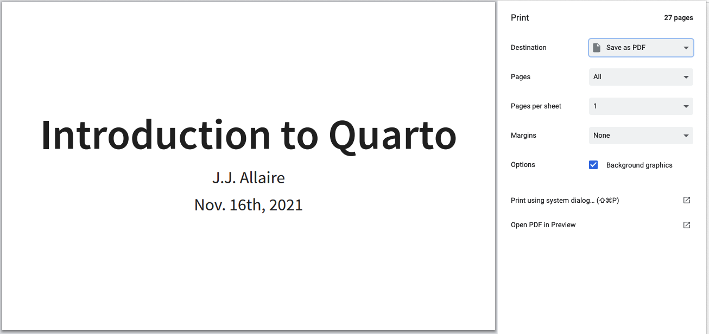
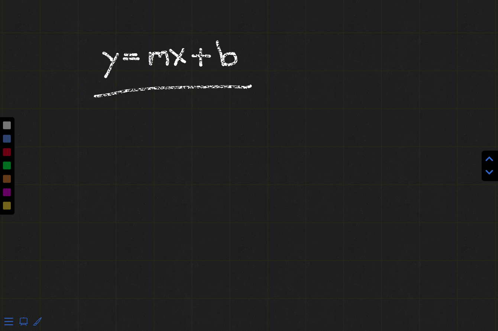

Presenting Slides
Overview
This article covers the mechanics of presenting slides with Reveal. Basic navigation is done using the following keyboard shortcuts:
| Action | Keys |
|---|---|
| Next slide | → SPACE N |
| Previous slide | ← P |
| Navigate without fragments | Alt → Alt ← |
| Jump to first/last slide | Shift → Shift ← |
You will often want to enter fullscreen mode when presenting. You can do this by pressing the F key.
In addition to basic keyboard navigation, Reveal supports several more advanced capabilities, including:
- Navigation menu and overview mode
- Speaker view (w/ speaker notes,timer, and preview of upcoming slides)
- Printing to PDF and publishing as self contained HTML
- Drawing on top of slides & chalkboard/whiteboard mode
- Multiplex, which allows your audience to follow the slides of the presentation you are controlling on their own phone, tablet or laptop.
These capabilities are described below.
Navigation Menu
Quarto includes a built in version of the reveal.js-menu plugin. You can access the navigation menu using the button located in the bottom left corner of the presentation. Clicking the button opens a slide navigation menu that enables you to easily jump to any slide:


You can also open the navigation menu by pressing the M key.
The navigation menu also includes a Tools pane that provides access to the various other navigation tools including Fullscreen, Speaker View, Overview Mode, and Print to PDF.
Use the following options to customize the appearance and behavior of the menu:
| Option | Description |
|---|---|
side |
Side of the presentation where the menu will be shown. left or right (defaults to left). |
width |
Width of the menu (normal, wide, third, half, full, or any valid css length value). Defaults to normal |
numbers |
Add slide numbers to menu items. |
For example:
format:
revealjs:
menu:
side: right
width: wideYou can hide the navigation menu by specifying the menu: false option:
format:
revealjs:
menu: falseNote that you can still open the menu using the M key even if the button is hidden.
Overview Mode
Overview mode provides an alternate view that shows you a thumbnail for each slide:

You can enable Overview Mode by pressing the O key.
Slide Zoom
Hold down the Alt key (or Ctrl in Linux) and click on any element to zoom towards it. Try zooming in on one of these images:
Alt or Ctrl click again to zoom back out.
Speaker View
The speaker view shows the current slide along with the upcoming slide, a timer, and any speaker notes associated with the current slide:
You can enable Speaker View by pressing the S key.
You can add speaker notes to a slide using a div with class .notes. For example:
## Slide with speaker notes
Slide content
::: {.notes}
Speaker notes go here.
:::Slide Numbers
You can add slide numbers to your presentation using the slide-number option. You can also control in which contexts slide numbers appear using the show-slide-number option. For example, here we configure slides numbers for printed output only:
---
title: "Presentation"
format:
revealjs:
slide-number: true
show-slide-number: print
---In addition to a simple true or false value, the slide-number option can also specify a format. Available formats include:
| Value | Description |
|---|---|
c/t |
Slide number / total slides (default) |
c |
Slide number only |
h/v |
Horizontal / Vertical slide number |
h.v |
Horizontal . Vertical slide number |
See Vertical Slides for additional information on vertical slides.
The show-slide-number option supports the following values:
| Value | Description |
|---|---|
all |
Show slide numbers in all contexts (default) |
print |
Only show slide numbers when printing to PDF |
speaker |
Only show slide numbers in the speaker view |
Print to PDF
Reveal presentations can be exported to PDF via a special print stylesheet.
Note: This feature has only been confirmed to work in Google Chrome and Chromium.
To Print to PDF, do the following:
- Toggle into Print View using the E key (or using the Navigation Menu)
- Open the in-browser print dialog (CTRL/CMD+P).
- Change the Destination setting to Save as PDF.
- Change the Layout to Landscape.
- Change the Margins to None.
- Enable the Background graphics option.
- Click Save 🎉
Here’s what the Chrome print dialog would look like with these settings enabled:

Print Options
There are a number of options that affected printed output that you may want to configure prior to printing:
| Option | Description |
|---|---|
show-notes |
Include speaker notes (true, false, or separate-page) |
slide-number |
Include slide numbers (true or false) |
pdf-max-pages-per-slide |
Slides that are too tall to fit within a single page will expand onto multiple pages. You can limit how many pages a slide may expand to using the pdf-max-pages-per-slide option. |
pdf-separate-fragments |
Slides with multiple fragments are printed on a single page by default. To create a page for each fragment set this option to true. |
For example, the following specifies that we want to print speaker notes on their own page and include slide numbers:
---
title: "Presentation"
format:
revealjs:
show-notes: separate-page
slide-number: true
---Preview Links
Reveal makes it easy to incorporate navigation to external websites into the flow of presentations using the preview-links option.
When you click on a hyperlink with preview-links: true, the link will be navigated to in an iframe that overlays the slide. For example, here we’ve clicked on a Matplotlib link and the website opens on top of the slide (you’d click the close button at top right to hide it):

Available values for preview-link include:
| Value | Description |
|---|---|
auto |
Preview links when presenting in full-screen mode (otherwise navigate to them normally) |
true |
Always preview links |
false |
Never preview links (the default) |
For example, here we set preview-links to auto:
---
title: "Presentation"
format:
revealjs:
preview-links: auto
---You can also set this option on a per-link basis. These two links respectively enable and disable preview:
[Preview](https://example.com){preview-link="true"}
[NoPreview](https://example.com){preview-link="false"}Previewing website in HTML format will use an <iframe>, which not all websites will allow (e.g. they could set in their respone header X-Frame-Options to deny, or frame-ancestor restriction in their Content-Security-Policy). If a website disallow iframe usage, the preview will not be working in the Quarto document output.
Slide Tone
Slide tone plays a subtle sound when you change slides. It was requested by a blind user and enables presenters to hear an auditory signal of their progress through the slides. Enable slide tone with:
format:
revealjs:
slide-tone: trueThe tones increase in pitch for each slide from a low C to a high C note. The tone pitch stays the same for incremental slides.
The implementation of slide tone was adapted from the slide tone plugin in xaringanExtra.
Auto-Slide
Presentations can be configured to step through slides automatically, without any user input. To enable this you will need to specify an interval for slide changes using the auto-slide option (the interval is provided in milliseconds). The loop option can additionally be specified to continue presenting in a loop once all the slides have been shown.
For example, here we specify that we want to advance every 5 seconds and continue in a loop:
---
title: "Presentation"
format:
revealjs:
auto-slide: 5000
loop: true
---A play/pause control element will automatically appear for auto-sliding decks. Sliding is automatically paused if the user starts interacting with the deck. It’s also possible to pause or resume sliding by pressing A on the keyboard.
You can disable the auto-slide controls and prevent sliding from being paused by specifying auto-slide-stoppable: false.
Slide Timing
It’s also possible to override the slide duration for individual slides and fragments by using the autoslide attribute (this attribute also works on Fragments). For example, here we set the auto-slide value to 2 seconds:
## Slide Title {autoslide=2000}Publishing
There are two main ways to publish Reveal presentations:
As a PDF file—see Print to PDF above for details on how to do this.
As an HTML file. For HTML, it’s often most convenient to distribute the presentation as a single self contained file. To do this, specify the
embed-resourcesoption:--- title: "Presentation" format: revealjs: embed-resources: true ---All of the dependent images, CSS styles, and other assets will be contained within the HTML file created by Quarto.
Note that specifying
embed-resourcescan slow down rendering by a couple of seconds, so you may want to enableembed-resourcesonly when you are ready to publish. Also note that Reveal plugin Chalkboard is not compatible withembed-resources— when Chalkboard plugin is enabled, specifyingembed-resources: truewill result an error.
See the documentation on Publishing HTML for details on additional ways to publish Reveal presentations including GitHub Pages and Posit Connect.
Chalkboard
Quarto includes a built-in version of the reveal.js-chalkboard plugin. Specify the chalkboard: true option to enable the plugin, which enables you to draw on a notes canvas on top of your slides and/or open up an empty chalkboard within your presentation:
---
title: "Presentation"
format:
revealjs:
chalkboard: true
---Note that Reveal plugin Chalkboard is not compatible with embed-resources output — when Chalkboard plugin is enabled, specifying embed-resources: true will result an error.
Here are what the notes canvas and chalkboard look like when activated:


To toggle the notes canvas on and off use the button or the C key.
To toggle the chalkboard on and off use the  button or the B key.
button or the B key.
Here are all of the keyboard shortcuts associated with the notes canvas and chalkboard:
| Action | Key |
|---|---|
| Toggle notes canvas | C |
| Toggle chalkboard | B |
| Reset all drawings | BACKSPACE |
| Clear drawings on slide | DEL |
| Cycle colors forward | X |
| Cycle colors backward | Y |
| Download drawings | D |
The following mouse and touch gestures can be used for interacting with drawings:
Click on the buttons at the bottom left to toggle the notes canvas or chalkboard
Click on the color picker at the left to change the color (the color picker is only visible if the notes canvas or chalkboard is active)
Click on the up/down arrows on the right to switch among multiple chalkboard (the up/down arrows are only available for the chalkboard)
Click the left mouse button and drag to write on notes canvas or chalkboard
Click the right mouse button and drag to wipe away previous drawings
Touch and move to write on notes canvas or chalkboard
Touch and hold for half a second, then move to wipe away previous drawings
Restoring Drawings
The D key downloads any active drawings into a JSON file. You can then restore these drawings when showing your presentation using the src option. For example:
---
title: "Presentation"
format:
revealjs:
chalkboard:
src: drawings.json
---Chalkboard Options
The following options are available to customize the behavior and appearance of the chalkboard:
| Option | Description |
|---|---|
theme |
Can be set to either chalkboard (default) or whiteboard. |
boardmarker-width |
The drawing width of the boardmarker; larger values draw thicker line. Defaults to 3. |
chalk-width |
The drawing width of the chalk; larger values draw thicker lines. Defaults to 7. |
chalk-effect |
A float in the range [0.0, 1.0], the intensity of the chalk effect on the chalk board. Full effect (default) 1.0, no effect 0.0. |
src |
Optional file name for pre-recorded drawings (download drawings using the D key). |
read-only |
Configuration option to prevent changes to existing drawings. true: no changes can be made, false (default): changes can be made. |
buttons |
Add chalkboard buttons at the bottom of the slide (defaults to true). |
transition |
Gives the duration (in milliseconds) of the transition for a slide change, so that the notes canvas is drawn after the transition is completed. |
For example, the following configuration specifies that we want to use the whiteboard theme with a (thicker) boardmarker width, and that we want to hide the chalkboard buttons at the bottom of each slide:
---
title: "Presentation"
format:
revealjs:
chalkboard:
theme: whiteboard
boardmarker-width: 5
buttons: false
---If you disable the chalkboard buttons globally you can selectively re-enable them for inidvidual slides with the chalkboard-buttons attribute. For example:
## Slide Title {chalkboard-buttons="true"}You can also use chalkboard-buttons="false" to turn off the buttons for individual slides.
Multiplex
Quarto includes a built-in version of the Reveal Multiplex plugin. The multiplex plugin allows your audience to follow the slides of the presentation you are controlling on their own phone, tablet or laptop. When you change slides in your master presentations everyone will follow and see the same content on their own device.
Creating a Reveal presentation that supports multiplex is straightforward. Just specify the multiplex: true option as follows:
---
title: "Presentation"
format:
revealjs:
multiplex: true
---Rendering the presentation will result in two HTML files being created by Quarto:
| File | Description |
|---|---|
presentation.html |
This is the file you should publish online and that your audience should view. |
presentation-speaker.html |
This is the file that you should present from . This file can remain on your computer and does not need to be published elsewhere. |
The two versions of the presentation will be synchronized such that when the speaker version switches slides the viewers also all switch to the same slide.
Multiplex Server
Behind the scenes there is a multiplex server that is synchronizing slide events between the viewer and speaker versions of the presentation. Note that the this server does not actually see any of the slide content, it is only used to synchronize events.
By default, a server created and hosted by the Revealjs team is used for this: https://reveal-multiplex.glitch.me/. This server is used by default when you specify multiplex: true.
Running your own server
If you want to run your own version of this server its source code is here: https://github.com/reveal/multiplex/blob/master/index.js.
You can then configure multiplex to use an alternate server as follows:
---
title: "Presentation"
format:
revealjs:
multiplex:
url: 'https://myserver.example.com/
---Note that Quarto calls the multiplex server behind the scenes to provision a id and secret for your presentation. If you want to provision your own id and secret you can do so at https://reveal-multiplex.glitch.me/ (or using your custom hosted server URL) and provide them explicitly in YAML:
---
title: "Presentation"
format:
revealjs:
multiplex:
id: '1ea875674b17ca76'
secret: '13652805320794272084'
---Note that the secret value will be included in only the speaker version of the presentation.
Learning More
See these articles lo learn more about using Reveal:
- Reveal Basics covers the basic mechanics of creating presentations.
- Advanced Reveal delves into transitions, animations, advanced layout and positioning, and other options available for customizing presentations.
- Reveal Themes talks about using and customizing existing themes as well as creating brand new themes.